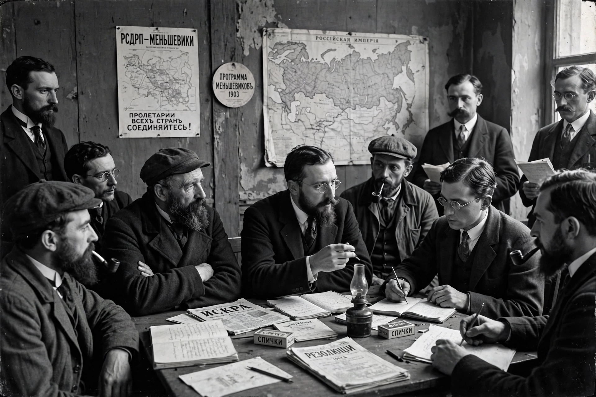

The Mensheviks were a faction of the Russian socialist movement that emerged in 1903 after a dispute in the Russian Social Democratic Labour Party with Vladimir Lenin's Bolsheviks.

| Mensheviks | |
|---|---|
| Leaders | Julius Martov, Alexander Martynov, Pavel Axelrod |
| Founded | 1903 |
| Ideology | Democratic socialism, Marxism |
At the 2nd Congress in London, Lenin's supporters won a vote on the editorial board of Iskra — bolsheviks meaning majority — while Martov's became mensheviks, minority, though numbers fluctuated. Mensheviks favoured a broad party and believed Russia needed a bourgeois-democratic stage before socialism.
In 1917 Mensheviks participated in soviets and the Provisional Government coalition. Opposing the October Revolution, they were gradually suppressed by the Bolsheviks, banned by 1922, and leaders exiled.